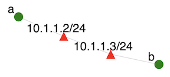

This exercise provides a gentle introduction for students into how to use SPHERE. It works well as a first assignment or in-class demonstration.
Follow steps 1-5 from class use guidelines to set up your account on SPHERE. These steps operate on your experiment development container (XDC), which serves as a gateway into your experiment.
Execute steps 7 and 8 using twonode as your labname. Step 7 creates the experiment, allocates nodes and sets up virtual machines on them. Step 8 installs necessary applications on the experiment nodes. Wait about 20 seconds between steps 7 and 8 to make sure that nodes have been fully set up, before the applications are installed.
This experiment sets up the topology shown below:

ssh a
to log into node a.
You may see an alert asking you if you really want to connect. Answer "y" for "yes". Once logged into a type:
ping b
This sends a kind of "hello" message from a to b. You should see once-per-second replies from node b. Hold the CTRL key and press C to exit the program.
On node a type:
iperf -s
This starts an iperf server.
Open another browser window, log into SPHERE and follow steps 1, 2, 3, 4, 6 from class use guidelines.
Then type:
ssh b
to log into node b. Then type
iperf -c a
After a few seconds the program should exit and report the bandwidth it measured.
| Command | Effect |
|---|---|
| ls dir | List contents of the directory dir |
| cat filename | Print contents of the file named filename |
| less filename | Print contents of the file named filename one screen at the time; press space to go to the next screen |
| touch filename | Create an empty file named filename |
| rm filename | Delete file named filename |
| sudo cmd | Execute command cmd as root |
Build on the previous example by storing the output of iperf into a file. On node b type:
iperf -c a > iperf.out
Our goal now will be to transfer this file to your machine (desktop or laptop), and to transfer another file from your machine to one of your experimental nodes.
You can test that you have installed the utility successfully by typing mrg in your Terminal window. If it prints a help page, the utility was successfully installed. Then type
mrg config set server grpc.sphere-testbed.net mrg login yourusername (type your password when prompted)
mrg xdc scp download -x xdc.yourusername b:iperf.out .Check that you can see iperf.out in your local directory. How would you copy a file from a different remote directory (not your home directory) into a different local directory?
su - yourusername echo "Hello world" > hw.out
On your machine type:
mrg xdc scp download xdc.yourusername:hw.out .Check that you can see hw.out in your local directory.
echo "Local file" > lf.out mrg xdc scp upload -x xdc.yourusername lf.out b:.Log into b node and check that you can see lf.out.
echo "Local file take two" > lftt.out mrg xdc scp upload lftt.out xdc.yourusername:.Log into your XDC and check that you can see lftt.out.
Find a terminal window you want to use. It can be a new window, obtained by following steps 1, 2, 3, 4, 6 from class use guidelines. Or it can be a window where you logged into a or b -- type exit to return to your XDC. Type:
stopexp twonodeThis will return all the resources to SPHERE. What Can Go Wrong